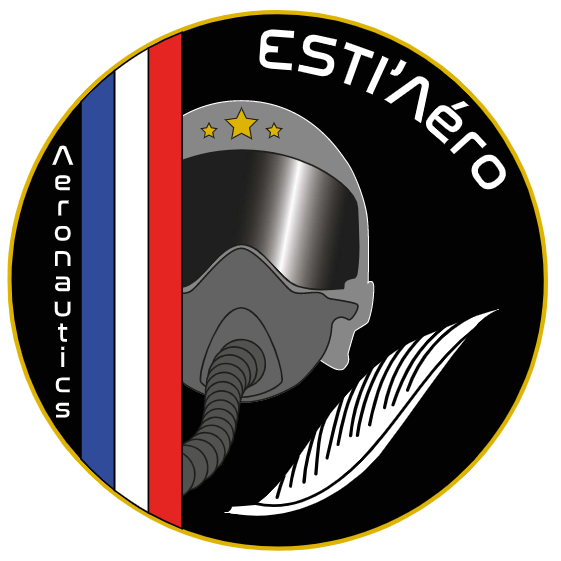
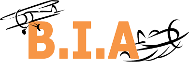
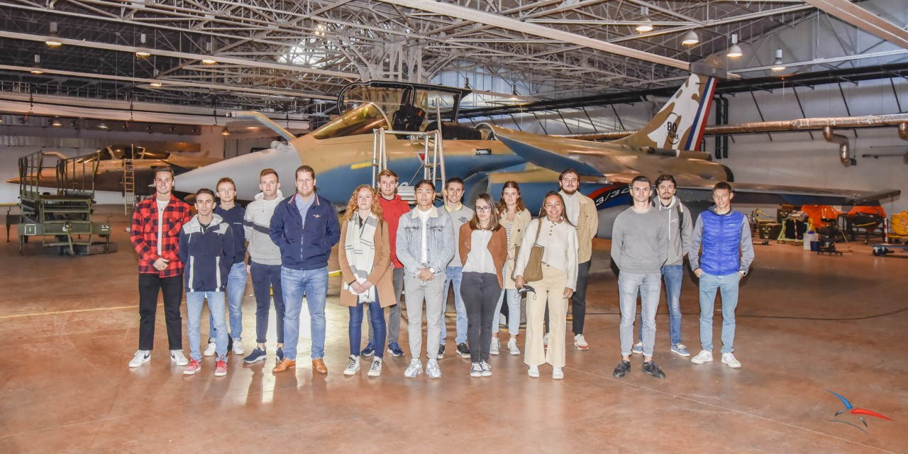
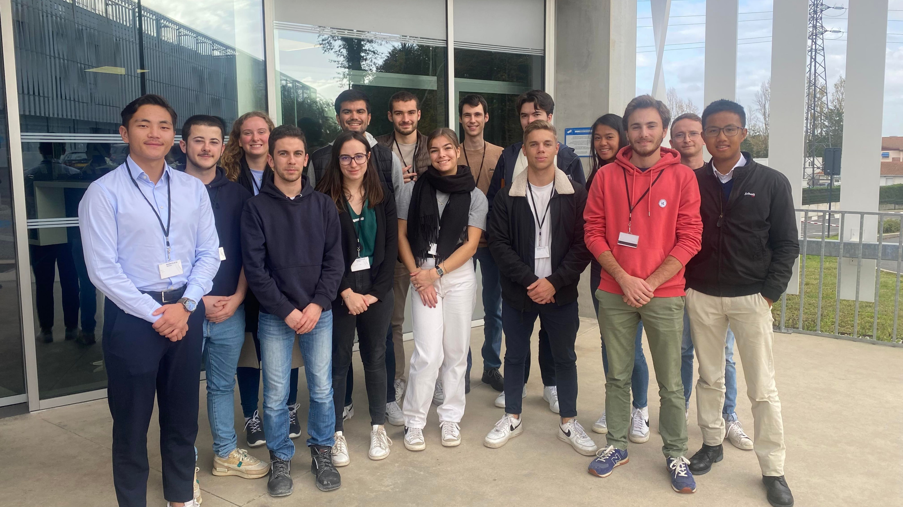
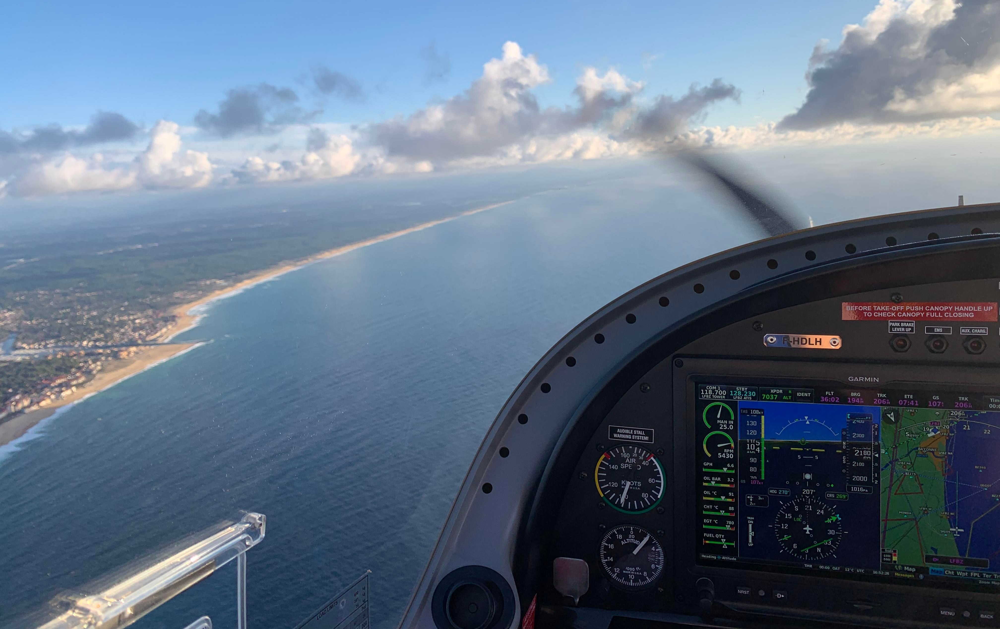
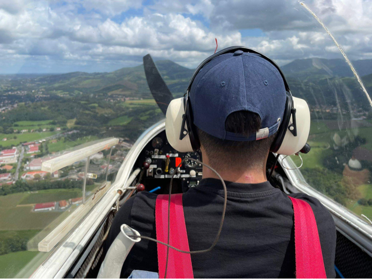

Pôle Aéronautique
Le pôle aéronautique de l'association regroupe différents événements et activités qui permettent
de mieux découvrir et appréhender ce domaine. Nous pouvons notamment évoquer le passage du Brevet
d'Initiation Aéronautique (BIA) ou encore différentes visites.
Brevet d'Initiation Aéronautique (BIA)

Le Brevet d'Initiation Aéronautique (BIA) est un diplôme délivré par l'éducation nationale, de niveau lycée,
qui permet aux jeunes étudiants d'obtenir des bases en aéronautique et spatial.
Ce diplôme offre des connaissances non négligeables pour passer des brevets de pilote.
Le BIA ouvre, pour les futurs ingénieurs de l'ESTIA, les portes du monde des entreprises aéronautiques et spatiales.
ESTI'Aéro offre la possibilité aux élèves de l'ESTIA de passer ce diplôme auprès de l’académie de Bordeaux avec des cours dispensés par un professeur de l'Aéroclub Turboméca.
L'association en partenariat avec l'ESTIA fournit aux élèves et au professeur les lieux et le matériel afin d'apprendre dans les meilleures conditions.
Le cursus classique de 50h n’est pas applicable pour notre association.
Néanmoins, le professeur dispense un condensé des partis les plus complexes en 24h.
Ce brevet comporte une formation théorique sur la mécanique du vol, la connaissance des aéronefs,
la réglementation aérienne, la météorologie ainsi que l’Histoire de l’Aéronautique et de l’Espace.
Une option facultative « Anglais aéronautique » est aussi proposée aux élèves.
En parallèle de l’obtention de leur BIA, les membres de l’association peuvent confronter leurs apprentissages théoriques à la pratique du vol sur le simulateur de l’association.
Cela donne beaucoup plus de sens à ce qu’ils apprennent et peut leur donner envie de continuer sur une licence de pilote.
Dans ce cas, ESTI’Aéro propose de passer son brevet de pilote planeur avec ses partenaires de l’aéroclub Itxassou ou encore son brevet de pilote privé sur avion léger (PPL) avec l’aéroclub Turboméca.
Pour la session 2022/2023, les cours se dérouleront entre janvier et février pour un examen en mai. Les inscriptions sont
disponible jusqu'au 20 novembre 2022.
Je m'inscris
Visites de sites aéronautiques
Il est très enrichissant pour les élèves de visiter des structures en lien avec l’aéronautique.
Cela peut aller du constructeur amateur qui montrera les « entrailles » de son aéronef en construction,
à l’usine du secteur qui conçoit et assemble des aéronefs en série.
Nous avons par exemple visité la base aérienne 118 de Mont-de-Marsan le 28 octobre 2021 ou encore
le site de Dassault Aviation à Biarritz le 17 novembre 2022 et nous sommes en relation
avec diverses autres entreprises dans le secteur de l’aéronautique pour organiser de futures visites comme le site de Dassault Aviation de Mérignac,
la base aérienne 120 de Cazaux ainsi que la DGA TA à Balma.

Visite de la base aérienne 118

Visite du site Dassault Aviation Biarritz
Partenariat aéroclub Turboméca
Cet aéroclub situé sur l’aéroport de Biarritz regroupe des passionnés d’aéronautique de l’entreprise Turboméca.
Ils s’y retrouvent souvent pour voler, faire des navigations et partager des moments conviviaux lors des beaux jours.
Le lien entre l’association et l’aéroclub avait déjà été tissé il y a quelques années et a été remis d’actualité l’année dernière en signant une convention.
Celle-ci permet aux étudiants d’apprendre à piloter sur les appareils de l’aéroclub ainsi que de pouvoir visiter les différents sites de Safran Helicopter Engines
et partager des moments de convivialité avec les adhérents de l’aéroclub autour des avions. Un des pilotes de l'aéroclub donne
les cours du BIA et permet aux élèves de voler lors d'un vol d'initiation.

Vol d'iniation du BIA
Partenariat avec le club de vole à voile d'Itxassou et Telerad
Basé sur l’aérodrome d’Itxassou (64), le club de Vol à Voile forme des pilotes de planeur et propose aussi des vols d’initiation,
des vols découverte l’été, mais aussi un stage de deux semaines où tous les passionnés acquièrent des compétences en vol en très peu de temps grâce à l’enseignement intensif et l’immersion dans le club.
Telerad est une entreprise située à Anglet (64), qui propose la fabrication,
la mise en service et la commercialisation de systèmes de radio pour la marine et le contrôle du trafic aérien.
Depuis la rentrée de septembre 2022, un partenariat entre le club,
l’entreprise Telerad et ESTI’Aéro a été mis en place. Ce partenariat consiste à initier nos membres au planeur et à le rendre plus accessible en proposant de faire passer
le brevet de planeur au Club d’Itxassou en profitant d’une bourse proposée par Telerad pour financer une partie des heures de vol. Il permet également d’avoir un retour d’expérience de pilotes expérimentés et donc de nous aider sur différents projets.
Ce partenariat est aussi l’occasion d’échanger entre les membres de l’association et les pilotes du club,
notamment sur l’installation et/ou la réparation du système de sécurité FLARM pour chaque planeur.
La prochaine étape est d’exploiter les données récupérées sur les FLARM afin d’améliorer les performances de vol des pilotes.

Elève boursier lors d'un vol d'entraînement